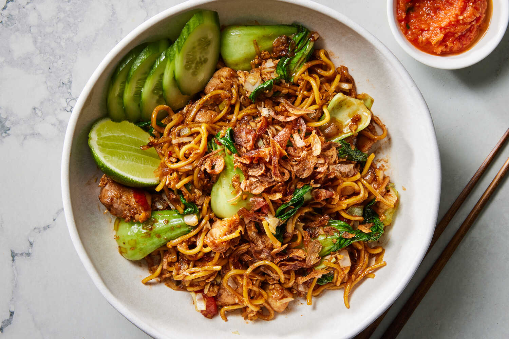

Resep Mie Goreng Hongkong

Bahan-bahan:
- 1 bungkus mie telur
- 4 buah Bawang merah iris tipis
- 3 buah Bawang putih iris tipis
- 2 helai Daun bawang dan sledri
- 1/2 buah kol dari 1 buah kol kecil
- 4 buah cabe rawit
- 2 butir telur ayam
- 2 sendok makan kecap manis
- 1 sendok makan saos tiram
- 1/2 sendok garam
- 1/2 sendok gula putih
- 1 sendok teh Masako
- 1 sendok makan kecap asin
- 1 sendok makan saos tomat/saos sambal
Cara Memasak:
- Panaskan minyak masukan bahan yang udah di iris tunggu sampe harum lalu masukan kol sampe layu.
- Masukan mie telur yang sudah di rebus Sebentar.
- Aduk sampai rata masukan, garam, kecap manis, kecap asin, gula, garam, masako, saos tomat/saos pedas dan aduk rata.
- Masukan telur yang sudah di goreng/orak arik sebentar.
- Tambahkan daun bawang dan seledri, aduk sebentar, angkat dan taburi dengan bawang goreng.
- Siap dihidangkan